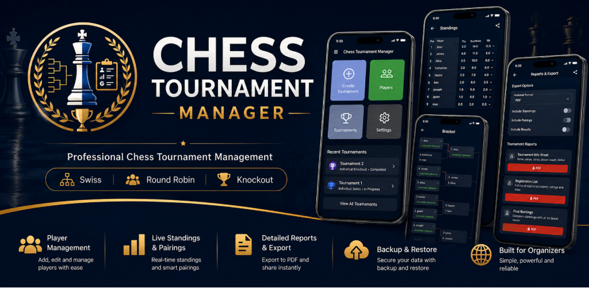
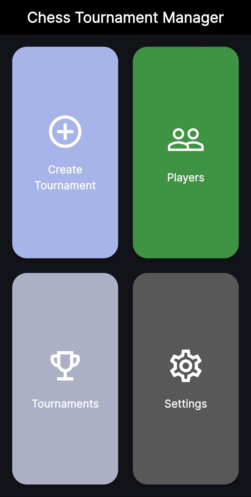
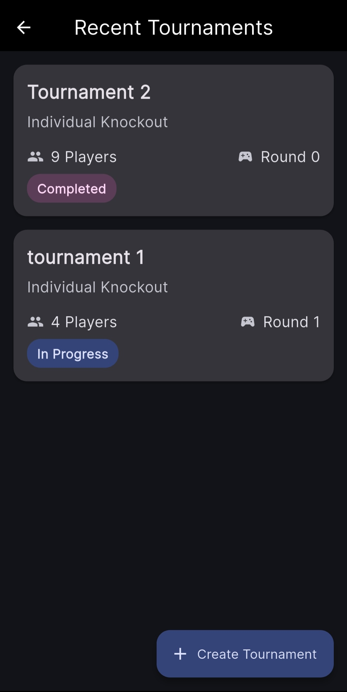
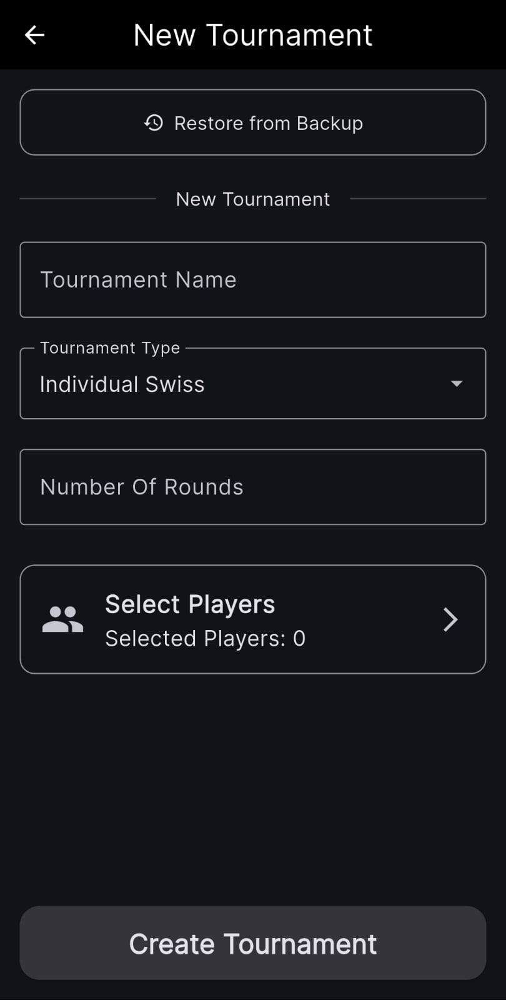
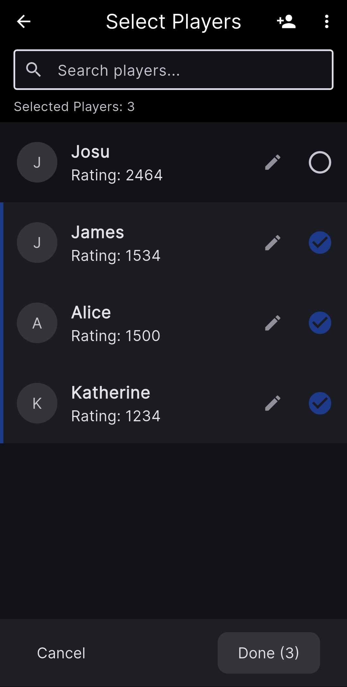
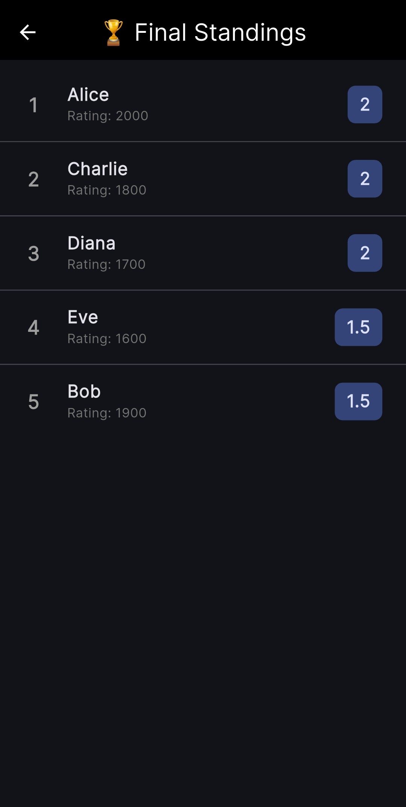
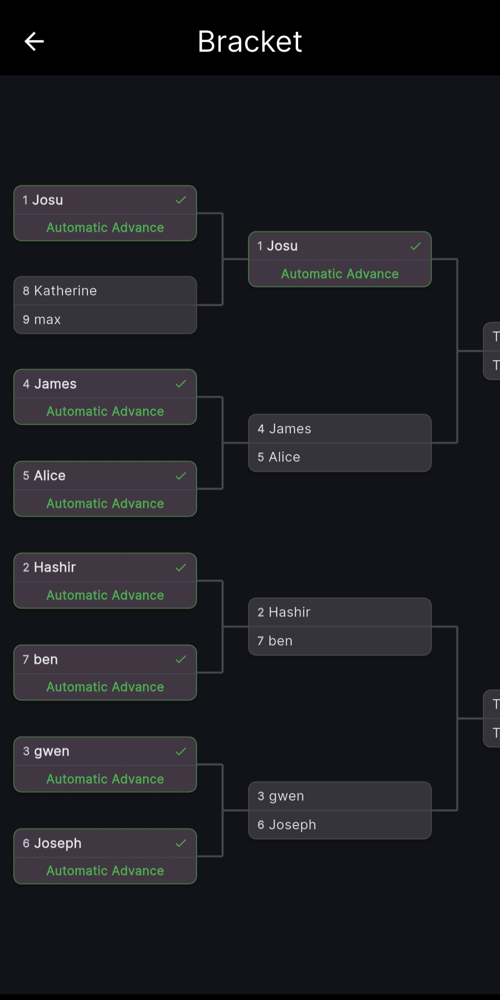
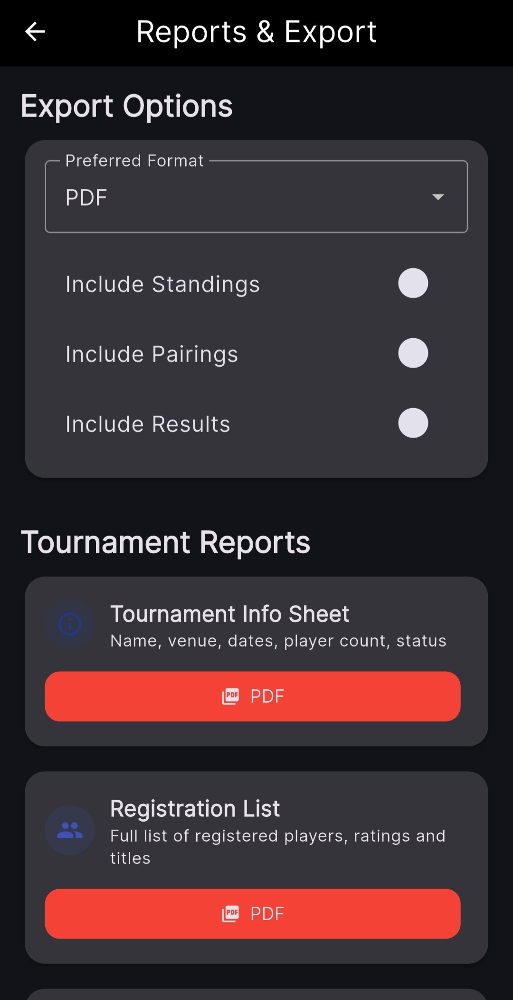

FIDE 2026 Dutch Swiss Engine
Locks starting TPNs before Round 1 (Rating → FIDE Title → Alphabetical) while handling heterogeneous brackets, MDPs, Limbo, S2 transpositions, resident exchanges, and withdrawal/reinstatement rules.
Not a chess game. A dedicated organizer & arbiter utility.
Built for chess clubs, schools, academies, and tournament arbiters. Run Individual and Team Swiss, Round Robin, and Knockout competitions completely offline on Android with deterministic pairings, configurable tie-breaks, Undo history, local backups, and multi-format reports.

Configure and run single-player events or multi-board team competitions inside one offline workspace.
Purpose-built pairing, tie-break, safety, and publishing tools running locally on your Android device.
Locks starting TPNs before Round 1 (Rating → FIDE Title → Alphabetical) while handling heterogeneous brackets, MDPs, Limbo, S2 transpositions, resident exchanges, and withdrawal/reinstatement rules.
Configure match board counts and larger team squads with substitutes, customize per-round board order, and resolve tied knockout encounters via Blitz Playoff, Armageddon, Drawing of Lots, or Arbiter Decision.
Drag-and-drop tie-break priority per tournament across Buchholz Cut 1, Buchholz, Median Buchholz, Sonneborn-Berger, Direct Encounter, Progressive Score, Number of Wins, Board Count, Top Board Results, and Bottom Board Elimination.
Export seven report types (Info Sheet, Registration List, Pairings & Results, Cross Table, Round Standings, Final Rankings, or Full Report) to print-ready PDF, CSV (UTF-8 BOM), and Excel (.xlsx) via Android sharing.
Built-in Activity Log undo reverses accidental result edits, withdrawals, reinstatements, round deletions, and setting edits. Export portable .ctmbackup archives (schema v1–v3) with smart duplicate-player conflict resolution.
Maintain reusable player records on your device with name, rating, optional FIDE ID, federation code, and official chess title priority for faster tournament registration and accurate seeding.
Transparent pairing logic and tie-break evaluations engineered directly into the tournament engine.
1..N Tournament Pairing Numbers prior to Round 1 and persists them in SQLite across all rounds; late entrants append cleanly.[C3] protection even in the final round.[C2], and respects withdrawals and reinstatements.Note on FIDE Alignment: Chess Tournament Manager is an independent software tool developed by Game Wings Support and is not officially certified or endorsed by FIDE. Arbiters and organizers are encouraged to review generated pairings and standings for officially rated tournaments.
Distraction-free screens optimized for quick tap workflows during live rounds. Select any screenshot to enlarge.







Gallery displays genuine screenshots captured from Chess Tournament Manager on Android. Newer v1.1.3 views—including Team Knockout FIDE C.07 tie-break settings, Round-by-Round Swiss pairings, CSV/Excel options, and Team Lineup editors—are documented on this site and on our Release Notes page.
No sign-up walls and no hidden developer servers storing your club roster.
Player names, ratings, FIDE IDs, rounds, board lineups, and activity logs stay locally inside the app's private SQLite database on your device.
Game Wings Support does not require registration or upload your tournament records to remote backend servers or third-party crash analytics.
The free Android release displays Google AdMob ads (Native cards, tournament Interstitials, and optional Rewarded ads on report generation) managed with Google UMP consent.
The Version 1.1.3 user interface currently runs in English with Light, Dark, and System theme support, plus bundled Unicode fonts for multilingual player names in PDF reports.
INTERNET and ACCESS_NETWORK_STATE permissions are used solely to load Google AdMob ads and display Google's User Messaging Platform (UMP) consent prompt in applicable regions, or when you share exported files through other apps.
.ctmbackup JSON backup file does not require watching a rewarded ad.
.ctmbackup file (schema versions 1, 2, or 3) checks for duplicate or ambiguous player profiles so you can merge safely or import as new entries.